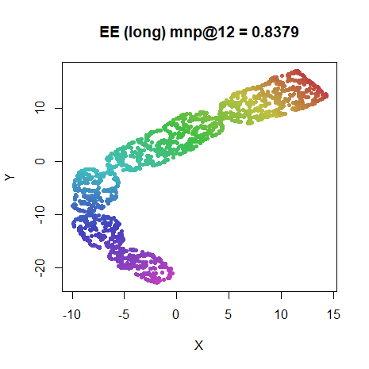
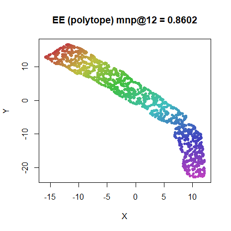

This article retains its original experiments and examples. For current package usage, see the usage guide.
Elastic Embedding (PDF) is related to symmetric SNE, but isn’t normalized. Apart from the method itself, the paper is interesting for being the earliest one I’m aware of that makes the connection between the attractive part of the cost function of SNE with spectral methods (e.g. Laplacian eigenmaps). It also manages to produce some good results (on an admittedly small number of datasets) without using normalization of the affinities. This makes the cost function much more amenable to stochastic gradient descent techniques that would allow even better scaling to large datasets than the Barnes-Hut approach used with t-SNE. And indeed, LargeVis (and UMAP), which uses SGD for its scaling, had a very similar cost function to EE.
The elastic embedding cost function is:
C = \sum_{ij} v_{ij}^{+} d_{ij}^{2} + \lambda \sum_{ij} v_{ij}^{-} \exp\left(-d_{ij}^{2}\right)
This differs slightly from t-SNE and its variants in using un-normalized weights (like LargeVis and UMAP) and introducing separate input weights, v_{ij}^{+} and v_{ij}^{-} for the attractive and repulsive part of the cost function, respectively. Additionally, a weighting parameter, \lambda, is introduced to weight the attractive and repulsive contributions to the cost function. Note that this is unrelated to the \lambda used in the NeRV cost function.
Positive Weights
The positive weights are defined as:
v_{ij}^{+} = \exp\left(-\beta_i r_{ij}^{2}\right) i.e. the usual Gaussian input weights as used in SNE, although note we are using un-normalized affinities rather than the probabilities p_{ij}.
The original EE paper uses a global \beta for all i so the input weights are symmetric. The
later spectral direction
paper uses the SNE affinities by perplexity calibration and symmetrizes
the resulting affinities, but does not carry out the
matrix-normalization step of dividing the affinities by their sum. For
the implementation in smallvis we use the perplexity
calibration approach, so we will proceed with the assumption that the
weights are always symmetric.
Negative weights
The negative weights are the raw Euclidean input distances:
v_{ij}^{-} = r_{ij}^{2}
In one example using the Swiss Roll dataset, the original EE paper sets a uniform negative weight, v_{ij}^{-} = 1. This is also used by Yang and co-workers when analyzing the connection between Elastic Embedding and SSNE.
Homotopy parameter, lambda
The weighting of attractive to repulsive forces is a free parameter,
\lambda in EE (a similar parameter is
used in LargeVis also). The topological term “homotopy” is applied to
this parameter. Values of 1, 10 and
100 have been used. The spectral directions paper looked at
both the COIL-20 and a 20,000-digit sample of MNIST and used \lambda = 100 for both, so we’ll try that
here too.
A “homotopy method” is also described which means starting the
optimization at a small (effectively 0) value of \lambda, and increasing it to the target
value over the course of the optimization. In the spectral direction
paper, the initial value is 1e-4, with fifty log-spaced
increments. As up to 10,000 iterations were allowed at each value of
\lambda, this seems like a major time
investment. This approach seems similar in spirit to the approach
advocated in the original NeRV paper, and
the multi-scale
JSE paper, which both suggest scaling the input probabilities over
the course of the optimization to get better results.
smallvis does not currently support the homotopy
method.
Gradient
If we define output weights as we would in SSNE:
w_{ij} = \exp\left(-d_{ij}^2\right)
then we can rewrite the EE cost function in terms of the weights as:
C = -\sum_{ij} v_{ij}^{+} \log w_{ij} + \lambda \sum_{ij} v_{ij}^{-} w_{ij}
and the gradient is:
\frac{\partial C_{\mathrm{EE}}}{\partial \mathbf{y}_i} = 4\sum_j^N \left( v_{ij}^{+} - \lambda v_{ij}^{-}{w_{ij}} \right) \left(\mathbf{y}_i - \mathbf{y}_j\right)
Datasets
See the Datasets page.
The Swiss Roll dataset, last seen giving the distance-based methods a workout, also makes its return here, having been used in the EE paper. To be like the EE paper, we’ll use 2000 points in the example here:
sr2k <- snedata::swiss_roll(n = 2000)Settings
Typical settings used for the results here are:
iris_ee_100 <- smallvis(
iris,
perplexity = 40,
scale = FALSE,
Y_init = "spca",
method = list("ee", lambda = 100),
ret_extra = c("dx", "dy"),
eta = 100
)For lambda = 1000, the learning rate had to be reduced
to eta = 10 for iris and oli.
This didn’t have much effect on the results for the other datasets.
If not using negative weights, then the value of lambda
has to be rescaled accordingly. Typical settings are:
iris_eeu <- smallvis(
iris,
perplexity = 40,
scale = FALSE,
Y_init = "spca",
method = list("ee", lambda = 1e-4, neg_weights = FALSE),
ret_extra = c("dx", "dy"),
eta = 10
)For the Swiss Roll, it’s not possible to get exactly the same results
as with the EE paper, because that uses a k-nearest neighbor Gaussian
kernel with k = 12 and a fixed
bandwidth \sigma = 15. For our
experiments, we calibrate the affinities to give a perplexity of
12, which necessitates varying bandwidths. The use of k = 12 with GMMDS unrolls this dataset
without disconnections, so the equivalent perplexity should be in the
right ballpark.
Results
For each dataset, reading from left to right and top to bottom,
lambda increases in powers of 10 from 1 to
1000 as indicated by the value in parentheses in the plot
title.
Conclusions
As noted by the EE paper itself, depending on the choice of
lambda, EE gives results that seem to be equivalent to
SSNE, without requiring any normalization of the output weights. The
default lambda = 100 seems like a good choice. You can also
use the default delta-bar-delta optimization settings with this
setting.
It would be nice to get results as good as t-SNE. I have implemented
a t-distributed version of EE in
smallvis, but I am not aware of anyone else ever trying
this, and the advent of methods like LargeVis and UMAP may have filled
that niche now (and seem to do so more successfully).
Negative Weights
The above experiments were repeated without including negative
weights. Apart from having to rescale lambda, there wasn’t
a large difference in the results. It did seem a bit harder to find a
satisfactory value of lambda that worked for all datasets.
With neg_weights = FALSE, a suitable range for
lambda seems to be between 1e-3 to
1e-5.
Given that the Swiss Roll results in the EE paper do show full unrolling, The Swiss Roll results look a bit disappointing, given that the EE paper results do show full unrolling. Allowing for a (much) longer optimization helps unroll it a bit more but still not completely (see below). SSNE on the Swiss Roll also shows a similar slow unrolling. I suspect there is an effect due to the calibrated bandwidths not being used in the output kernel.
The EE results with the Swiss roll don’t use SNE calibration, instead using a fixed bandwidth (presumably chosen by trial and error) for the Gaussian kernel. Additionally, the weights were forced to zero outside the 12 nearest neighbors. This might account for the different behavior, but it would be a pity if the results were so dependent on such a specific weight selection.
It seems more likely that the polytope method helps here, because
using a low value of lambda approximates the Laplacian Eigenmap result
which does unfold the manifold, but doesn’t do a good job with the
distances perpendicular to the main axis of the roll. Below are the two
results for the Swiss Roll: on the left, setting
lambda = 100 and max_iter = 70000; and on the
right, a version approximating the polytope method, where
lambda = 1e-4 initially with max_iter = 10000
and then the embedding is repeated with lambda increasing
from 1e-3 to 100 in powers of 10, using the
result from the previous embedding as initialization. Overall, both
methods are allowed up to 70000 iterations, but the tol
settings allow for early stopping so not all of those 70000 iterations
are necessarily used.
 |
 |
While not perfect, using the polytope method certainly seems to
improve the unrolling. The results shown here took up about 19000
iterations. Starting from lambda = 100 directly also does
an ok job, but the results above are from the 70000th iteration. To be
fair, it’s hard to detect any movement after 30000-40000 iterations, but
at the 19000th iteration, the polytope result is definitely preferred.
Note also the “pinched” parts of the roll. This is where the roll has
been twisted due to local optimization of the roll at the expense of
regions around the pinch. This is much less prevalent with the the
polytope method.
This document will be updated if the “polytope method” is implemented.